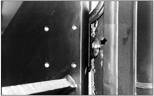

Lubricate Mast Side Rollers Typical Example Lubricate the 4 fittings on the outer mast (2 fittings) and inner mast (2 fittings). Lubricate Carriage Side Rollers  Typical Example Lubricate the 4 fittings for the carriage side rollers, two on each side of the carriage side rollers. Parent topic: Mast, Carriage, Lift Chains & Attachments - Inspect, Lubricate